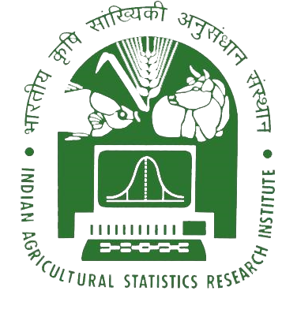

2025
Decoding stress specific transcriptional regulation by causality aware Graph-Transformer deep learning
Current Plant Biology. Read article ↗

The 10 most recent selected publications listed here (2023–2025), with DOI links to publisher records. Visit the scholarly profiles above for the full, updated bibliography.
Current Plant Biology. Read article ↗
G3: Genes, Genomes, Genetics. Read article ↗
Computational and Structural Biotechnology Journal. Read article ↗
Computational Biology and Chemistry. Read article ↗
BBA – General Subjects. Read article ↗
Plant Molecular Biology. Read article ↗
Briefings in Bioinformatics. Read article ↗
Briefings in Functional Genomics. Read article ↗
Functional & Integrative Genomics, 23(2), 92. Read article ↗
Functional & Integrative Genomics, 23, 113. Read article ↗
This page displays 10 selected recent publications from 2023–2025 based on the current website bibliography. For the complete and most current publication list, use Google Scholar, ORCID, or ResearchGate above.